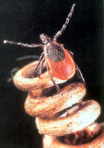
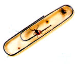
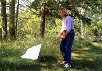
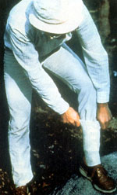

Tick-borne Lyme disease continues to expand across North America while the search advances for better ways to cope with this emerging disease. In the future, a human vaccine, a fungus that lives in leaf mold, pesticide-dispensing deer feeders and mice "wicks" all promise better defenses against Lyme disease. For now, "dressing like a geek" when you're in the woods or fields, keeping tick-eating guinea fowl and other poultry, and encouraging wild-animal diversity to better control tick populations naturally are the safest, most effective tick-control strategies on hand.
THESE TICKS ARE TINY
For 25 years before 1977, when Lyme disease was first traced to tiny tick nymphs the size of poppy seeds, people in Old Lyme, Connecticut, and many other places, had been getting sick. Often their aches and lack of energy were diagnosed in error as chronic fatigue syndrome, lupus or even multiple sclerosis. Now, we know most had Lyme disease, which is caused by the Borrelia burgdorferi bacterium and spread via tiny ticks hitching rides on birds, dogs, deer, mice and other critters.
Today, Lyme disease is concentrated in the Northeast, but it has been identified in every comer of the United States and in some parts of Canada. In 2002, statistics from the Centers for Disease Control and Prevention (CDC) confirmed more than 23,000 new human Lyme disease cases spread over 47 states. Connecticut, Delaware, Maine, Maryland, Massachusetts, Minnesota, New Hampshire, New Jersey, New York, Pennsylvania, Rhode Island and Wisconsin accounted for 95 percent of those cases. Leaders of private sector efforts to study and stop Lyme disease say even more cases would be confirmed if the official criteria were broadened. In Canada, infected ticks now are prevalent in parts of Ontario bordering on Lake Erie and in several forested sections of British Columbia.
Although people can get Lyme disease at any age, children younger than 15 and adults aged 45 to 59 are at greatest risk for becoming infected, according to CDC statistics.
Lyme disease is one of several bacterial infections transmitted by ticks. In the eastern and upper midwestern United States, it is transmitted most often by the black-legged tick (Ixodes scapularis), commonly called the deer tick. West of the Rockies, the western black-legged tick (I. pacificus) carries the disease. And lone star ticks (Amblyomma americanum) can transmit two other Lyme-like diseases with similar symptoms. Ticks are most likely to transmit Lyme disease to humans when they are nymphs only slightly bigger than the period at the end of this sentence. When they are engorged with blood, nymphal Lyme disease-causing ticks expand to the size of a small pinhead. When fully grown, these ticks still are very small -not much bigger than a sesame seed.
Ticks carry the bacteria in their midgut, so an extended period of feeding-usually 36 to 48 hours-is necessary for them to transmit the disease. Therefore, checking for ticks regularly when spending time outdoors is your first line of defense. But because of their tiny size, it is entirely possible to carry a nymph on your body, have it feed and then drop off without ever knowing you were bitten.
"People don't realize how small the ticks are," says David Duffy, a professor of botany at the University of Hawaii who led a study on the effectiveness of guinea fowl in reducing tick populations in New York. "Be a little paranoid," he advises.
In the Northeast, about 25 percent of black-legged nymphs and 50 percent of adults carry the Lyme disease bacteria, says David Weld, executive director of the American Lyme Disease Foundation (ALDF). In Georgia and regions farther south, tick infection rates drop to 4 percent and 8 percent, respectively. In the upper Midwest, 25 percent to 50 percent of blacklegged ticks are infected; on the West Coast, infection rates usually average from 5 percent to 15 percent for nymphal ticks and about 1 percent to 4 percent for adult ticks. The main reason for the disparity across the regions is that more species of lizards and small mammals that are ineffective hosts for the bacteria live in the warmer areas. "Lizards have a protein that kills the bacteria," Weld says.
SYMPTOMS VARY
The symptoms of Lyme disease are not exactly the same in every person who becomes infected. In many cases, a red rash appears in either a ring-like pattern or as a red spot around or near the bite anywhere from several days to several weeks after the person contracts the disease from an infected tick. The rash seldom causes pain or itching, and usually persists for three to five weeks. On dark-skinned people, the rash may appear as a dark, bruise-like ring and often is hard to notice.
Other early signs of infection resemble the flu and can include chills, fever, joint pain and fatigue accompanied by swollen lymph nodes nearest the bite. This may seem like the flu, and symptoms may go into remission, but if it is Lyme disease, it most likely won't go away without treatment. Several antibiotics are highly effective, but if the disease is not treated promptly, the bacteria will move into other parts of the body, including the muscles, nerves, joints and brain. Late-stage Lyme disease is debilitating, causing severe arthritis, mental confusion, numbness of the arms and legs, and heart problems such as arrhythmia. It is sometimes difficult to treat.
In late 1998, a human vaccine for Lyme disease became available, but some patients who received the vaccine developed severe arthritis and sued the manufacturer, GlaxoSmithKline, who later discontinued the product, citing poor sales; the class-action case was settled in July 2003. No vaccine for the disease is available at this time.
AN ECOLOGICAL PERSPECTIVE
The ticks that transmit Lyme disease in the Northeast and upper Midwest feed on a number of animals, but the host most likely to pass the Lyme-disease bacteria to young tick larvae in these regions is the white-footed mouse (see "The Tick Life Cycle," Page 56). The mouse's immune system doesn't kill the bacteria if it is bitten by an infected tick. For reasons researchers do not understand, the mouse carries the bacteria but does not show any symptoms of the disease. When another tick bites the mouse, that tick picks up the bacteria.
Thus the mice "serve as incubators for the disease," explains Rick Ostfeld, an animal ecologist at the Institute of Ecosystem Studies in Millbrook, N.Y. When Ostfeld and his team surveyed Lyme-disease infection rates in numerous small animals and birds in Dutchess County, N.Y., they found that 90 percent of white-footed mice were carriers, compared to only 10 percent of squirrels (infection rates for other small animals were similarly low). In the Midwest, chipmunks and shrews as well as white-footed mice serve as incubators, also called "reservoir" hosts.
"Anything you can do to preserve native mammal, bird and lizard diversity should reduce Lyme-disease risk," Ostfeld says. Newly hatched tick larvae are disease free, and if they feed on animals that are poor reservoirs-most squirrels, for example-fewer nymphs will be infected with the disease.
Maintaining wildlife diversity is difficult in small plots of less than five acres, yet such small woodland "fragments" are ideal habitats for white-footed mice, which Ostfeld says generally range across less than a quarter of an acre. Why not get rid of the mice? Ostfeld cites these problems: "Spatially speaking, mice are very aware of what's going on around them. As soon as you trap some, others move in to take over the habitat.
"The other problem is that mice do positive things for us by keeping pest insects in check, such as gypsy moths, which defoliate trees. They are the main predators of gypsy moth cocoons." Ostfeld adds that mice also are a primary food source for many animals we like, such as owls, hawks and foxes.
In most Western states, Lyme-disease rates are lower than in the East. In the West, tick larvae and nymphs feed particularly on lizards such as western fence lizards, commonly called "bluebellies," and southern alligator lizards. They feed on small mammals, such as wood rats and kangaroo rats, to a much lesser extent. Robert Lane, professor of insect biology at the University of California at Berkeley, has found that a complex of enzymatic proteins in the lizards' blood actually kills Lyme-disease bacteria. As infected ticks feed and the lizard blood enters their bodies, the bacteria are cleared from the ticks' systems.
Yet Lane cautions against feeling too secure, especially if you find yourself in a hardwood forest in northwest California, where Lyme disease is a serious threat. In those forests, as in the Northeast and along damp river corridors across the Midwest, ecological factors appear to favor the prevalence of Lyme disease and the ticks that carry it.
TAKE POSITIVE ACTION
In the life cycle of the Ixodes ticks, leaf litter typical of a forest floor harbors the ticks during all four stages of their lives. In a forested residential area in New Jersey, raking up leaves in March and June reduced tick populations by 72 percent to 100 percent.
But woods need their leaf litter, and if you live near a large tract of forest, raking may be impractical, anyway. In this situation, it's better to maintain broad buffer zones that are mowed regularly, and to dress defensively (keep reading). Although ticks sometimes wander onto the edges of lawns, they are most likely to find you as you walk through tall grass or low shrubbery. Adult ticks crawl out to the tip of a blade or branch and wait for a potential host to happen by, a tick technique called "questing." Weld says nymphal ticks, which are responsible for 90 percent of Lyme disease cases, are found mostly on the ground. So, if you "stay on the path"-which is exactly what you should do when hiking in woods or fields where ticks are likely to be-you won't pick up as many.
How about encouraging natural predators? Unfortunately, ticks don't have many of the domestic variety. Some Mother Earth News readers report that their flocks of poultry, especially guinea fowl, have put big dents in tick populations, which echoes centuries-old folk wisdom (see "Go Ahead, Get Guineas," October/November 2003, and, at MOTHER'S Web site [ http://www.motherearthnews.com ] see "Poultry Pest Patrol Stories" under "Community").
But in the suburbs of the future, the tick's worst enemy may be fungi such as Metarhizium anisopliae and Beauveria bassiana, which are found in soils and leaf litter in the Northeast. These and other fungi weaken and kill black-legged ticks. In the wild, researcher Ostfeld says fewer than 5 percent of female ticks are infected with the Metarhizium fungus. He says he hopes dev eloping a way to produce the fungus so it can be dusted or sprayed will result in a good biocontrol method. If it works, using the fungus would be like using milky spore disease to control grubs in your lawn. Ostfeld says inoculating leaf litter with the fungus in fall, when adult ticks begin questing for hosts, would result in a fairly good reduction in the tick population. (Stay tuned.)
OF MICE AND DEER
Right now, efforts to control the ticks that carry Lyme disease are directed toward killing them while they are attached to mice or deer, which makes more sense than drenching entire woods with pesticides. The deer-based approach is preferred, because every dead adult female tick represents up to 3,000 eggs that won't be laid, and about 90 percent of all adult deer ticks are found on the ears, head, neck and upper body of deer.
This brings us to the "4-poster" deer feeder, which is a deer feeder surrounded by four paint rollers and stocked with clean, whole-kernel com. The paint rollers are saturated in permethrin, a potent synthetic insecticide that is marketed as a tick "repellent" but that will actually kill ticks. As the deer go for the corn their heads and necks rub on the paint rollers.
Because so many ticks are found on the head or neck, this is a tightly targeted way of getting at them. In two years, this method resulted in nearly 100-percent control of ticks at Goddard Space Flight Center in Greenbelt, Md. Other sites where 4-posters have been tested did not show such dramatic results, but even the lowest rate of control-59 percent on Gibson Island, Md.-is encouraging.
The ALDF obtained a permit from the U.S. Environmental Protection Agency (EPA) in October 2003 to use permethrin on deer. Although in some states, including Colorado, Nebraska, New York and Wyoming, deer feeding is now regulated in hopes of stopping the spread of Chronic Wasting Disease, the ALDF man ufactures 4-poster feeders for use in communities throughout the Northeast.
Although 4-poster feeders eventually will be available for individual homeowners, a professional still will have to apply the permethrin to the rollers. For more on this research, visit www.ars.usda.gov/ and search for "Out of the Lyme-Light," or contact the ALDF at (800) 876-5963 or www.aldf.com .
It also is legal to use permethrin to control ticks on mice, which is the idea behind Damminix, a control system comprised of cotton wads laced with permethrin and tucked into special tubes placed where mice can find them. Theoretically, mice carry the treated cotton to their nests, where it kills the ticks. But sometimes it works, and sometimes it doesn't. Or, if it does kill lots of ticks, the mice might bring in more stuff and pile it on the cotton, which then stops working. Some studies do show that Damminix works in some regions, but it's probably like dipping your dog, having him he tick-free for a week or so, and then being back where you started once he's run in the woods again. Damminix costs $210 for 96 tubes (a minimum of 24 tubes per acre are recommended). The tubes are biodegradable and may need to he replaced twice a year.
Enter Maxforce, a new product comprised of a baited box that lures mice inside, where they are wicked with fipronil. This is the same chemical used in Frontline products, which are used to control fleas and ticks on dogs and cats. In a four-year CDC study, Maxforce provided 96-percent control of ticks in a 10-acre tract, but it's a pricey cure. Contracting for Maxforce installation and monitoring through a licensed exterminator will cost you $300 to $600 a year. Maxforce is available only through pest management professionals in the Northeast. For more information, visit www.maxforcetms.com .
PROTECT YOURSELF
Because humans are a preferred host for ticks, it is crucial to never forget this when venturing into places where Lyme disease-carrying ticks are likely to find you. Local health departments, park rangers and close neighbors can tell you whether Lyme disease is common in a particular area.
"Dress like a geek," advises researcher Ostfeld. That means wearing long pants with the cuffs tucked into your socks, although Weld warns that if you employ this method, ticks may end up hiking towards the back of your neck, a tough spot to check. Light-colored clothing makes it easier to spot ticks, and if you're finding ticks regularly, keeping a sticky tape-type lint roller handy is a good idea, too. This little gizmo will pick up unattached ticks from clothing or pets, which also can contract Lyme disease (dogs are particularly at risk). (For more on how to protect your pets, see "Flea and Tick Control Have You Scratching Your Head?" August/September 2002.)
When you come indoors after outside activities, give your clothes a hot 10-minute spin in a clothes dryer to kill any ticks that might be hiding in the folds or seams. Take a hot, soapy bath (Duffy says a salt water swim is surprisingly effective, too, if you're close to the ocean), and check yourself thoroughly for tiny foreign dark dots, paying special attention to moist body creases in the armpits, groin, hairline, scalp, waistband and the backs of your knees. Let someone else check you, if you can, because it's hard to check your own scalp and backside. Check yourself before bed, too.
You also can apply an herbal or a DEET-based repellent to exposed skin or your clothes, but don't expect it to give you total protection. Ticks won't feed on skin sprayed with DEET, but they will scamper over it to find a hospitable spot. Use DEET sparingly, especially on children.
If tick levels are high and you need to be in their habitat a lot, you may want to try the pesticide permethrin on your clothes. Duffy says he and the other researchers involved in his study protected themselves by spraying their clothing (long trousers tucked into socks) with permethrin-based products. "It locks on to fabric, so it doesn't come off in the wash," he says. "We lined our trousers up on the porch, sprayed them and let them dry. They were good for five or six washes each, or two weeks at least."
If you opt to use permethrin, remember: Do not apply it to your skin-only to your clothes. Weld advises not spraying permethrin on clothes above your waist to avoid breathing fumes your body heat may trigger.
If you do find an attached tick, remove it carefully using fine-tipped tweezers or forceps. Then wipe the bite with an antiseptic, circle it with a permanent marker, and wash your hands and tweezers. Check the bite location every few days for a rash or other unusual inflammation, and promptly seek medical attention if you see or experience any symptoms of Lyme disease. The disease is usually curable when treated in its early stages, but if you wait too long, you could be in for a long and difficult recovery.
Mother Earth News contributing editor Barbara Pleasant is the author of The Gardener's Bug Book. Another of her books, Garden Stone, received the Garden Globe Award from the Garden Writers Association of America.
Mother Earth News
|
 Courtesy ALDF (2) An adult female deer tick (Ixodes scapularis) perched on a vine tendril, enlarged about seven times. |
 Barbara Pleasant Various stages of the deer tick, shown at actual size of a paper clip for scale. From left: larva; adult female; nymph; adult male. |
 To see if ticks are present, author Barbara Pleasant drags a light- colored cloth flag over a grassy area. This is a good monitoring method, but 30 minutes or more of continuous dragging is needed to reduce tick populations. Putting the cloth through a hot wash cycle followed by a hot dry cycle will kill the collected ticks. |
|
 To protect yourself from Lyme disease, dress like a geek! Wear light-colored long trousers and tuck them into white socks to more easily spot any arriving ticks. |
|
|